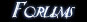
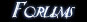

First, some background. Doors in Nightblade are made up of two parts - a Door Control kismet object and the actual physical door(s) themselves. The door control keeps track of the door state and shares it between a number of actual doors, making double doors easy to set up.
1. All doors and other movers use static meshes in UT3. So the first step is to select a door static mesh in the generic browser. Nightblade's doors are in a package called NbDoor.
2. With the door mesh selected, right-click in one of the viewports hover over the Add Actor... menu option. You will see mixed into the UT3 options a number of Nightblade options. The relevant options for doors are the "Add NbDoor" and "Add NbDoor (Preconfigured)" choices.
"Add NbDoor (Preconfigured)" creates a door set up with a DoorControl, which is generally what you will want to use. "Add NbDoor" creates a door without a door control, which can be used to add additional doors to connect to an existing DoorControl - if you want to set up double doors, for instance.
For some reason, if you add a "NbDoor (Preconfigured)" without first having opened UnrealKismet at least once since opening UT3 Editor, the DoorControl doesn't get created (I guess this is an UT3 Editor bug), so open and close the Kismet editor and then add a "NbDoor (Preconfigured)". If this has worked (and kismet boxes aren't set to be hidden) then your door should appear with a friendly green kismet box around it.
3. Scale and position the door in the intended doorway, in the closed position. Please take note that the pivot point for Nightblade's doors is on one of the bottom corners (denoted by a red + in the viewports) - ensure that you place the door such that the pivot point is where you want the door to rotate around (where the door's hinge would be).
4. Right-click the door and select Find NbDoor_X in UnrealKismet. This should open UnrealKismet with the sequence relating to the door shown (it also opens a search window you can safely close). On the left of the sequence is the DoorControl. This contains the majority of the door settings:
bBreakable - can the door be damaged and eventually broken.
InitialDoorHealth - how much health the door has.
bInitialLocked - does the door start locked.
bPickable - can the door be picked.
fPickTime - how long it takes to pick the door's lock.
KeyTag - the tag of the key that can unlock this door.
OwningTeam - the team that owns this door, meaning they can open it even when locked.
damageSound - the sound the door makes when damaged.
lockedSound - the sound the door makes when locked.
unlockedSound - the sound the door makes when unlocked.
The properties for the NbDoor itself allow you to set the various opening and closing sounds for the door, under the InterpActor tab.
On the right is the Matinee sequence for the door. Double click this to open the matinee editor.
5. Zoom out on the matinee sequence using the mouse wheel until you can see both red triangles. This denotes the length of the sequence. Doors should open and close reasonably quickly, so click the right-triangle and drag it back until the sequence is 0.75 seconds long (you may need to change your timeline granuality in the toolbar to 0.05s first).
Next set the current time to 0.000 by moving the black line to the left edge. Select the Movement Track under MoverGroup and press enter to set the initial keypoint. A little red triangle should appear.
Then move the current time to the right-edge of the time sequence. Without closing the Matinee window, select your door in the world and rotate it to the open position. Then return to the matinee window, select the Movement track again and press enter to add the final keypoint.
If you move the black bar back and forth in the matinee window you should see your door moving between the open and closed position in the world now.
6. One final step is required to get the door functioning - by default, NbDoors have no collision (this is another UT3 editor thing). Luckily you can add collision to all doors at once, so if you need to place a lot of doors you can do this step once at the very end. Select your door. If necessary, right-click the door and select "Select all NbDoor". Then enter actor properties, open the Collision tab and for Collision Type select COLLIDE_BlockAll.
-:-


 



{kind=link}
{kind=link}
{kind=link}
{kind=link}
{kind=link}
{kind=link}
{kind=link}
{kind=link}
{kind=link}
{kind=link}